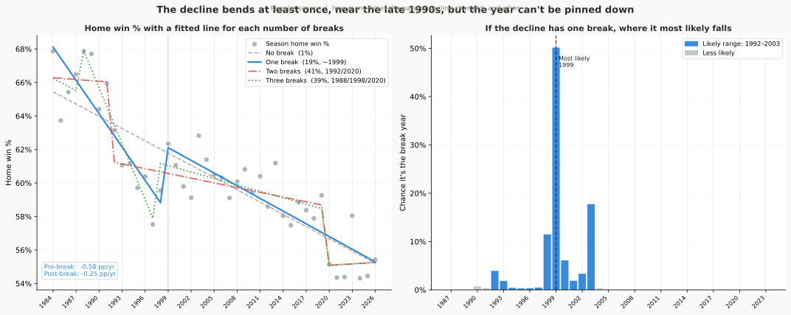
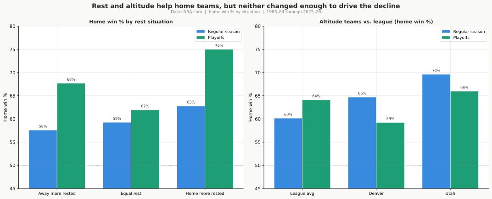
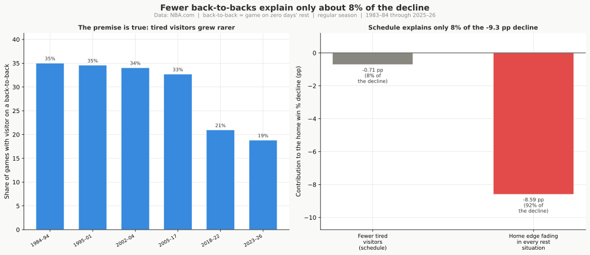
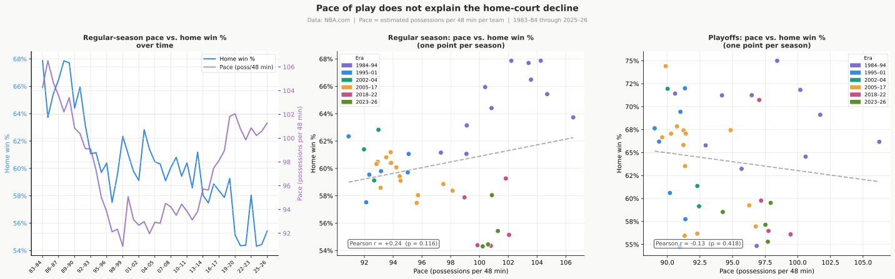
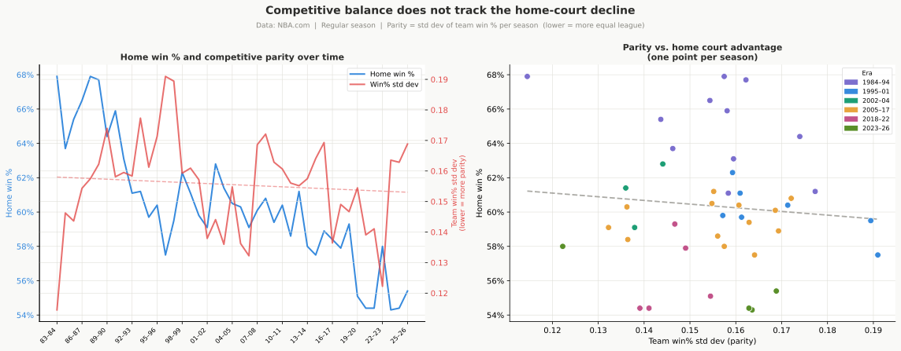
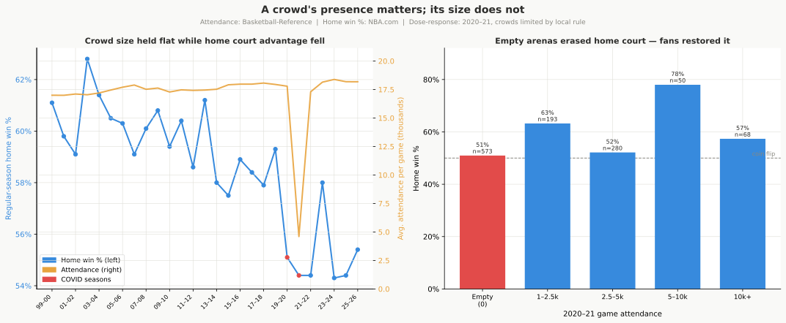

The Investigation: What Drives Home Court, and What Doesn’t
Companion to NBA Home Court Advantage: Findings. The findings report tells the story in full; this document shows the tests behind it. Part 1 covers what actually drives home court and its decline, and the evidence that each driver is real. Part 2 covers the explanations that sounded reasonable but did not survive a direct test.
How to read the numbers
Every test here carries two measures of how seriously to take it.
A p-value answers one question: if there were truly no effect, how often would random chance alone produce a result at least this strong? A small p means chance is an unlikely explanation. The stars in the tables are the conventional thresholds:
| stars | p-value | rough meaning |
|---|---|---|
* |
< 0.05 | unlikely to be pure chance |
** |
< 0.01 | quite unlikely |
*** |
< 0.001 | extremely unlikely |
| (none) | ≥ 0.05 | can’t rule out chance |
A confidence interval (CI) is the more useful of the two, and the one to read first. A “95% CI” is the range the true value is likely to sit in, given the games available. When I report the regular-season decline as -0.24 points per year, 95% CI [-0.28, -0.21], two things matter at once: the whole band is negative, so the decline is real, and the band is narrow, so its size is well pinned down. A “significant” result with a band of [+0.5, +20] is barely detected and wildly uncertain; the same star count with [+8.0, +8.4] is precisely measured. Same stars, very different findings.
One caution recurs throughout, and Part 2 has the clearest example. With about 52,000 games behind these tests, even a trivially small effect can clear the significance bar. A result can be statistically real and practically meaningless at the same time, so always check the size of the effect, not just the stars.
Part 1: What Drives Home Court
Home court advantage is real, it lives in a few measurable things on the court, and its 40-year decline runs almost entirely through those same things narrowing. Each section below states a claim, the test that checked it, what the data showed, and why the result holds up.
The Decline Is Real, Not Noise
The claim. The home team’s win rate has fallen by about 10 percentage points over four decades, in both the regular season and the playoffs.
The test. Fit a trend line through the season-by-season home win rate against the calendar year, regular season and playoffs separately. I fit it two ways: a binomial model that weights each season by how many games it holds, and an ordinary trend line with standard errors adjusted for the fact that one season’s result is correlated with the next. When two different methods agree, the finding doesn’t depend on the modeling choice.
What the data showed. Both methods land in the same place. The regular season falls about 0.24 points per year, 95% CI [-0.28, -0.21], p < 0.001, roughly a 10-point drop across 43 seasons. The calendar year alone explains about three-quarters of the season-to-season swing in home court. The playoffs fall at a similar rate (about 0.23 points per year, 95% CI [-0.36, -0.09], p < 0.001, roughly 9.5 points total) but with a much wider band and far more scatter: each playoff season is only about 80 games, so the year explains only about a fifth of the variation.
Why it holds. The whole confidence band is negative in both contexts, so this is not the random bounce of a few odd seasons. A battery of break-detection tests agrees on the shape: the decline bent once, gently, in the late 1990s, slowing from about 0.6 points per year to about 0.25, and has otherwise been a steady drift. It never reversed. The regular-season figures rest on tens of thousands of games and are solid; the playoff figures share the same direction but, on far fewer games, pin down the size less precisely.
It is league-wide, not a few fading franchises. Give every franchise its own decline rate and the spread across them is all noise: 100% of the variation between teams is the random bounce of short panels, leaving essentially no true difference. Strip that out and all 31 franchises with a long enough record collapse onto a single shared decline rate, and not one is rising. The slide is not Sacramento or Phoenix handing back an old edge while the rest hold; it is the whole league drifting down together. Even when the model is told exactly which teams are hosting and which are visiting each game, the size of the era drop barely changes (the biggest era moves by 0.5 pp), so it is not an artifact of which franchises happened to play more home games in which decade.
Where it is heading. A separate test asks what happens if the recent slope simply continues: let the underlying level drift forward and forecast the next five seasons, with intervals that widen the further out they reach. The central regular-season path falls from about 54.9% to 53.5% by 2031, 95% interval [48.4%, 58.6%]; the playoffs fall from about 58.8% to 57.1%, with a far wider 95% interval [44.9%, 69.3%] because each postseason holds so few games. The forecast is a what-if on the current trend, not a prediction about future rules; its value is that even the upper edge of the regular-season interval stays below where home court sat in the mid-1980s.
What Home Court Is Made Of: Four Box-Score Channels
The claim. Home court can be measured through four box-score factors: shooting, rebounding, foul calls, and turnover margin. The test isn’t whether these categories matter, every possession ends in one of them; it’s how much of the home advantage each one accounts for, and whether together they capture nearly all of it.
The test. A model of who wins each game from four home-minus-away differences: effective field goal percentage, fouls (which carries the free-throw advantage), turnovers, and rebounds. The model then splits the home advantage into a contribution from each category, with the four contributions summing to the whole. Bootstrap bands (re-running on re-drawn samples) put a range on each share.
What the data showed. In the regular season the four channels carry 95% of the +10.1-point home advantage, 95% CI [91, 97]%. Shooting is the largest single piece at 43%, then rebounds at 25%, fouls at 14%, and turnovers at 13%; about 5% is left unexplained. The playoffs look much the same: the channels carry 93% of the larger +14.1-point advantage, 95% CI [86, 102]%, split across shooting (33%), turnovers (22%), rebounds (21%), and fouls (17%).
Why it holds. The four channels rebuild the home advantage almost exactly in both contexts, and the regular-season bands are tight. The playoff shares are looser because each playoff season is small, and they fold in the fact that the home team is usually the better seed, but the level split is solid. The next four sections take each channel that changed over time.
The Narrowing Whistle
The claim. Referees have always called fewer fouls on the home team, and that advantage has shrunk. The shrinking whistle is one strand of the decline.
The test. Era-by-era averages and a trend line on the home-minus-away foul differential and free-throw-attempt differential, regular season and playoffs. Then the share of the overall decline that the foul channel carries, from the four-channel split above. Separately, every referee with at least 50 playoff games on record is checked for a home-favoring tilt, with a correction for the fact that testing 47 officials at once will throw up a couple of false positives by luck.
What the data showed. The regular-season home foul advantage went from 1.23 fewer fouls per game in 1984-94 to 0.25 in 2023-26, a trend of +0.022 per year, 95% CI [+0.017, +0.028], p < 0.001, a drop of about 80%. The free-throw advantage fell in step, from +1.97 attempts per game to +0.46. The playoffs moved the same way (1.58 fewer fouls down to 0.68, trend +0.020 per year, 95% CI [+0.007, +0.034], p < 0.01) but kept about 2.7 times the residual foul advantage of the regular season. The foul channel accounts for 18% of the regular-season decline, 95% CI [14, 22]%, and about 18% of the playoff decline. The tilt is universal, not a few rogue officials: 45 of 47 playoff referees favor the home team, and 29 are individually clear even after the correction for multiple testing.
Why it holds. The trend is significant in both the regular season and the playoffs. And there is a fingerprint: when the 1994-95 hand-checking crackdown took effect, the foul channel jumped immediately (a +0.44 step, 95% CI [+0.13, +0.74], p = 0.007) while shooting, turnovers, and rebounds showed no jump at all. A change in officiating is one of the few things that can move the home advantage on its own, and this is what it looks like when it does.
The Three-Point Shift
The claim. As both teams moved their shots out to the three-point line, the home team’s shooting advantage flattened.
The test. The trap here is obvious: three-point shooting and home court both trended hard for 40 years, so a raw correlation between them is guaranteed and proves nothing. The real test compares games within the same era: among games played close in time, do the higher-three-point games show lower home win rates? If the relationship survives stripping out the shared 40-year trend, it is much more likely to be mechanical.
What the data showed. It survives. The within-era effect is -2.27 points of home win rate per 10 points of three-point rate, 95% CI [-3.08, -1.45], p < 0.001, barely below the unadjusted -2.64 (95% CI [-3.07, -2.20]). The playoffs show an even stronger within-era effect (-3.12 per 10 points, 95% CI [-5.89, -0.36], p = 0.027). The home effective-field-goal advantage fell from about 1.6 points to roughly 0.9-1.0. And when three-point rate is held in the picture, the home shooting trend vanishes entirely: the fading shooting advantage is the three-point story. Shooting accounts for 21% of the regular-season decline, 95% CI [11, 28]%.
Why it holds. A check of whether that link is a genuine long-run tie or just two series trending across the same 40 years comes back as mostly trend: the raw season-level association (about -0.90) is two lines drifting opposite each other, not a real connection. But the within-era, game-by-game effect is real and significant, and it points the same way in the playoffs. The mechanism is compositional: threes are taken from spots where home comfort and familiar rims matter less than they do on interior shots, so as both teams shifted outward, the home shooting advantage had less room to operate. One last guard against reading too much into the shared trend: a year-by-year lead test asks whether a season’s three-point rate forecasts the next season’s home court, and it finds nothing. The perimeter shift does not lead the decline season to season; the link that carries the story is the within-game one, where the higher-three-point games are the lower-home-court games inside the same era.
The Rebounding Collapse
The claim. The home rebounding advantage died, almost entirely on the offensive glass, and it is the single largest driver of the regular-season decline.
The test. Era averages and a trend line on the offensive, defensive, and total rebound differentials, plus a pace-free measure: the share of available offensive boards the home team grabs minus the away team’s share. Raw rebound counts rise and fall with pace and with how many shots miss, so the share is the clean measure of who actually controls the glass. Then a check of whether the rebounding fade is just downstream of the three-point shift.
What the data showed. The advantage died on the offensive glass. The regular-season offensive-rebound differential went from +0.61 per game to -0.05: home teams no longer out-rebound visitors at their own missed baskets at all. The pace-free share advantage collapsed roughly tenfold, from +2.14 points to +0.21, trend -0.052 per year, 95% CI [-0.060, -0.044], p < 0.001. Rebounding carries 30% of the regular-season decline, 95% CI [25, 38]%, the largest single channel. The playoffs show the same shape (share advantage +2.74 down to +0.70, trend -0.046 per year, 95% CI [-0.076, -0.015], p = 0.004), and rebounding carries 28% of the playoff decline.
Why it holds. Three things. The pace-free share metric collapses too, so this is not a side effect of the league playing faster or slower. It is independent of the three-point shift: holding three-point rate in the picture absorbs only about 8% of the rebounding trend, and it stays highly significant (p < 0.001), a genuinely separate strand. And it tracks the league-wide retreat from offensive rebounding as teams traded crashing the glass for getting back on defense. That last link is a season-level association (about +0.82) that the same long-run check flags as mostly parallel trend, so the independent within-channel evidence is what carries the conclusion, not the raw number. One more, from a different camera: where modern player-tracking data exists (roughly 2014 on), it shows the same fade up close. The home edge in converting available offensive boards is small and slipping (averaging +0.71 pp over the tracking years), and home teams hold no measurable box-out edge at all, exactly what you would see if the offensive-glass advantage had largely collapsed before the cameras were installed.
The Turnover Edge
The claim. Home teams used to give the ball away less often than visitors, and that gap closed.
The test. The same era averages and trend line on the home-minus-away turnover differential, plus its share of the overall decline and a check against the three-point shift.
What the data showed. In the regular season the turnover differential trends toward zero at +0.019 per year, 95% CI [+0.014, +0.024], p < 0.001, and the channel carries 27% of the decline, 95% CI [20, 34]%, second only to rebounding. Part of it is downstream of the perimeter shift (about half the trend is absorbed when three-point rate is held in the picture) but it survives that test. The playoffs are different: the turnover channel carries only about 10% of the playoff decline, and its trend there is not statistically clear, with a wide band.
Why it holds in the regular season, and the caveat for the playoffs. The regular-season trend is significant and survives the three-point control, so it is a real strand of the decline. The playoff turnover story is directional at best: the sample is small and the band runs from a meaningful contribution down to essentially nothing. This is one of the places where the regular season is established and the playoffs only suggestive.
The four channels above, working together, capture 96% of the regular-season decline, 95% CI [87, 107]%. The playoff channels capture 67% of the playoff decline, 95% CI [38, 107]%, which leaves about a third of the postseason slide outside the measured box score and loosely pinned. The regular-season account is close to complete; the playoff account is the same story told on far fewer games. Everything in Part 2 was tested against this account and added little or nothing to it.
One more check on the breakdown itself. The channel shares above come from a straight-line model. To see whether that assumption is doing the work, the same four edges were fed to a flexible win model that lets the factors bend and interact, which then splits each game’s outcome among them and reads off how much each factor’s edge shrank over the 40 years. It lands on the same split: shooting, rebounding, and turnovers each carry a substantial slice of the regular-season decline and fouls the smallest, about 14%, with the slices adding back to the same drop of about 9.4 pp. The playoffs split the same way. Since the two methods share no assumptions, the agreement says the breakdown is a feature of the games rather than of the straight-line form.
How fragile are these links to something the box score never measured? One standard check asks how big a hidden, unmeasured cause it would take to explain a channel’s link to winning away entirely: a cause linked to both that channel and who wins. To erase the foul link, such a cause would have to explain at least 28.9% of the leftover variation in both fouls and home wins, more than the foul channel’s own measured link to winning (10.5%). For shooting the bar is higher still, 60.5%. Those are demanding thresholds, so the foul and shooting strands are hard to explain away with one omitted cause. This only bounds how robust the links are; it does not prove the channels cause home wins.
Does the breakdown predict a decline it never saw? The strongest test of whether this is the real machinery is to make it forecast blind. The four-channel win model was frozen on the seasons through 2013, then asked to call each later season’s home win rate from that season’s box-score edges alone, with no peek at the result. On the held-out seasons 2014–2026 it misses each season’s home win rate by about a point on average (0.95 percentage points in the regular season), beating both a flat guess (off by 5.48) and a naive extension of the early trend line (off by 1.45), and it even catches the 2021 dip the trend line sails past. The playoffs are noisier but point the same way: the channel model misses by 3.87 points against 7.30 for the trend line. A mechanism fit only on the earlier seasons that then reconstructs the later ones it was never shown is a stable one, not a story fitted to hindsight.
Part 2: What I Ruled Out
Several explanations for the decline are compelling on their face: the rules changed, travel improved, tired visitors became rarer, bigger crowds made arenas louder, more parity compressed outcomes. Each deserves a direct test rather than an assumption.
For each hypothesis below, I lay out why it seemed plausible, what was measured, what the data showed, and where the intuition went wrong. The statistical detail behind every test is in home_court_results.md; the charts here are the same ones used in the full analysis pipeline.
Rule Changes and the Era Labels
Why it seemed plausible. The main findings chart opens with six labeled eras, each marking a rule change: the hand-checking crackdown, zone legalization, the perimeter-hand-check ban, freedom-of-movement emphasis, the take-foul rule. The era shading makes each boundary visible. It would be natural to read one or more of those transitions as explaining where home court bent.
The test. I tested whether each rule-change year produced a one-time step in home win percentage on top of the ongoing slide, the kind of jump a trend alone would not predict.
The result. Exactly one boundary registers: 1994-95, worth a genuine one-time drop of about 2.6 points beyond the trend (95% CI [0.6, 4.6] pp, p = 0.010). Every other change passed through the trend line with no significant step: zone legalization, the 2004-05 perimeter hand-check ban, freedom of movement, and the take-foul rule. In the playoffs, even 1994-95 doesn’t register; the postseason slide is steady drift throughout.
Is the decline a staircase or a smooth slope? A separate break-detection test asks a different question: not whether a specific boundary caused a step, but how many times the slope bent and when. It finds evidence for at least one gentle bend around the late 1990s, consistent with the hand-checking era, but it can’t pin the year within a decade or settle how many bends there are. If the decline has a single bend, it most likely falls around 1999, with a likely range of 1992–2003. The decline is smooth drift, not a staircase of sudden drops at the rule boundaries. (The post-2017 steepening discussed in Part 1’s three-point section rests on that channel evidence, not on this test, which is too coarse to count bends.)

Why the intuition failed. Rule changes alter how the game looks, but most of them change things for both teams equally. If zone defense is legalized, both home and away teams can run it and face it. If hand-checking is restricted, both teams stop using it. The rule reshapes the game; it doesn’t reshape who benefits from playing in their own building.
The 1994-95 exception works for a specific reason. Hand-checking affected referee discretion, and referee behavior toward home teams is one of the few things that can shift asymmetrically. When referees were directed to call tighter games, the home-favoring foul bias compressed: not because home teams were less protected by the rule, but because tighter calling narrowed the gap across all calls. Foul calls responded immediately at the 1994-95 boundary (a +0.44 step, 95% CI [+0.13, +0.74], p = 0.007), while the shooting channel showed no such step. That asymmetry is the fingerprint of referee behavior, not shot-selection rules.
One complication: the three-point line was also shortened in 1994-95 through 1996-97, and the two changes can’t be fully separated at the season level. The channel data points more toward hand-checking, but the shortened line may have contributed. See home_court_results.md for the full event-study output.
The practical implication for reading the main chart: the era labels tell you when the rules changed. They do not tell you that those changes bent home court. The shading is a calendar, not a causal map. Only one era boundary corresponds to a detectable break in the trend, and even that one mostly accelerated a slide that was already underway.
Travel and Time Zones
Why it seemed plausible. Air travel has improved substantially since 1984. Teams now charter private planes, travel with larger staffs, and follow more sophisticated recovery protocols. If away teams in 1984 arrived meaningfully more fatigued, better travel conditions should have gradually closed part of the home-court gap.
The test. I measured how game outcomes move with great-circle travel distance between the two cities and with time-zone crossings, within each era, rest level, and altitude.
The result. Travel distance has a measurable but negligibly small effect in the regular season: about 0.07 percentage points of home win rate per 100 miles, 95% CI [-0.13, -0.02]. The band clears zero, but the size is the story, and the effect is so small that its sign barely means anything: it actually runs slightly negative, so if anything more travel goes with the home team winning a touch less, not more. Over a coast-to-coast trip (roughly 2,500 miles) it comes to under 2 percentage points either way, and the win-rate buckets don’t even fall in order. In the playoffs, travel distance has no measurable effect at all (95% CI runs from -0.23 to +0.27 pp per 100 miles, straddling zero). Time zones are flat in both contexts. This is the textbook case from the “how to read the numbers” box: significant, because tens of thousands of games can detect almost anything, yet far too small to matter.
Why the intuition failed. Two reasons. First, home teams travel too. Away teams fly in; home teams flew back from their previous road trip. Better planes benefit both sides, so the relative disadvantage of arriving in a specific building doesn’t shrink just because the flight got more comfortable. Second, the raw travel effect was always smaller than intuition suggests. Even a cross-country trip is worth less than 2 percentage points of home court in the model, against a baseline advantage of 7 to 10 points. Travel is a real but minor factor, and it hasn’t changed over time in a way that explains the trend.
Rest and Altitude
Why it seemed plausible. Rest should matter: a well-rested team outperforms a fatigued one, and home teams may systematically enter games fresher. Altitude should matter too: Denver and Utah play at elevation, which visibly taxes visiting teams. If either factor grew more prominent over time, it could explain part of the trend.
The test. I categorized each game by which team was better-rested and compared home win rates across categories. I measured altitude’s effect by isolating Denver and Utah in a regression that includes era and rest.
The result. Rest creates genuine variation. Home teams win about 63% of regular-season games when they enter better-rested, and 58% when the visitor has the rest advantage. That 5-point gap is real. Denver and Utah add about 8 percentage points to their regular-season home win rates, the largest franchise-level effect in the dataset.

Why neither explains the decline. The rest gap has stayed roughly constant across all eras. It existed in the 1980s and it exists now; it did not shrink as home court faded. Altitude’s effect is confined to two franchises and has actually weakened somewhat in recent years; it can’t explain a league-wide trend. In the playoffs, rest is confounded with team quality: extra days between rounds almost always mean you swept the previous series, making you likely the stronger team regardless. Separate out which team was the better seed, and the playoff rest advantage largely disappears. Neither factor moved in the direction or at the scale needed to drive the decline.
Load Management and the Back-to-Back
Why it seemed plausible. This is the most specific and testable version of the rest argument. The NBA scheduling office has been reducing back-to-back games for over a decade. Visiting teams arriving on the second night of a back-to-back were always likely to be fatigued. If fewer tired visitors means fewer easy home wins, the schedule change alone could account for part of the decline.
The test. A shift-share decomposition: measure how home win rates changed within each rest situation (both teams fresh vs. visitor on a back-to-back), then measure how much of the overall trend comes from the mix shifting (fewer back-to-backs) versus the rate changing within each bucket.
The result. The premise is correct: visitor back-to-back frequency fell from about 35% in the 1980s to under 20% today. But the schedule change accounts for only about 0.7 percentage points of the 9-10 point regular-season decline, roughly 8%. The other 92% comes from home court shrinking within every rest situation alike. In games with no back-to-back, home teams win less than they used to. In games with a tired visitor, home teams also win less than they used to. The schedule shift nudged home court; it didn’t drive it down.

Why the intuition overshot. The home advantage against a tired visitor (about 65%) is only 6 points above the baseline (about 59%). Even a 16-point drop in back-to-back frequency moves the league-wide average by less than a full percentage point. The mechanism is real; the magnitude is just too small to carry the story. The decisive test: if tired visitors were the main driver, you would expect the advantage to hold steady in games with rested visitors and only fall in back-to-back games. The data shows it fell equally in both.
Pace of Play
Why it seemed plausible. The NBA slowed considerably from the 1980s to the mid-2010s, then sped back up after 2015. Either shift could plausibly affect home court. A slower game means fewer possessions and less opportunity for the crowd to affect repeated moments. A faster game might amplify energy. Either way, the pace swings were large and visible.
The test. Season-by-season plots of pace (possessions per game) against home win rate, plus within-era regressions for both regular season and playoffs.
The result. No meaningful relationship in either direction. Season to season the two barely move together: a near-zero +0.24 in the regular season and -0.14 in the playoffs, the signs even pointing opposite ways. Pace fell for two decades and home court held roughly flat, then fell; pace rose sharply after 2015 and home court kept falling. Within any given era, higher-pace seasons do not consistently produce higher or lower home win rates. The same holds in the playoffs.

Why the intuition failed. Pace changes the number of opportunities in a game, but it doesn’t systematically advantage one venue over the other. More possessions means more chances for crowd effects to operate, but also more chances for the better-shooting team to assert itself, and more possessions for an efficient away offense to score. The effects run in multiple directions and wash out. The data confirms there’s no net signal.
Home vs. Away Three-Point Differential
Why it seemed plausible. Part 1 establishes that the league-wide shift to three-point shooting hurt home court. A natural follow-on question: maybe home teams are being outgunned from the perimeter specifically? If away teams now take meaningfully more threes, they might be neutralizing the home crowd effect by operating at distance rather than attacking the basket.
The test. Season-by-season measurement of the home-minus-away three-point attempt rate differential.
The result. Home and away teams have always attempted threes at nearly identical rates. For most of the last 40 years, home teams actually took slightly fewer threes per shot attempt than road teams. Today home teams take about 0.4 percentage points more. The differential is tiny, trends in the wrong direction to explain the decline, and shows no relationship to the home win rate trend.
Why the intuition failed. The three-point story in Part 1 is about both teams taking more threes, not home teams being outgunned. When both teams shift together toward the perimeter, the eFG% gap closes because three-point shooting is taken from spots where crowd and familiarity effects are smaller than on interior attempts. It is a compositional shift that compresses the advantage, not a home-vs-away imbalance.
Competitive Balance
Why it seemed plausible. If the NBA has become more equal, games should be more evenly contested on talent alone. More evenly matched teams should produce more coin-flip outcomes, which would naturally push the home win rate toward 50%. It is a reasonable structural argument.
The test. I measured competitive balance as the standard deviation of team win percentages each season and plotted it against home win rate. I then ran a regression after removing the shared long-run trend from both series to avoid spurious correlation.
The result. Parity and home court advantage barely track each other from season to season. The era breakdown actually contradicts the theory: the most unequal era (1995-01) had already seen HCA fall sharply from its 1980s peak, while the most balanced era (2002-04) saw HCA tick back up briefly. After removing the shared downtrend from both series, a small year-to-year association does emerge, but the effect is modest and nowhere near large enough to explain the 40-year decline.

Why the intuition failed. Competitive balance compresses outcomes symmetrically. More parity means both home and away teams face more evenly matched opponents, but it can’t create an asymmetric disadvantage specifically for the home team. If anything, greater parity should make home court more influential, not less, since the teams are closer in talent and venue effects are more likely to be decisive. The structural argument runs the wrong direction.
Crowd Size
Why it seemed plausible. The NBA expanded significantly over this period, adding franchises in smaller markets with younger fan bases. Older arenas in established markets were sometimes loud in ways newer buildings haven’t replicated. If average crowd intensity or size fell, the noise advantage should have weakened.
The test. I plotted league-average attendance per game against home win percentage across the 27 seasons with reliable gate figures.
The result. NBA arenas have been near capacity throughout: roughly 17,000 per night in the early 2000s, still above 18,000 in the 2020s, the very years home win rates hit their lowest. Season to season, attendance and home court advantage are unrelated and if anything drift in opposite directions. In the playoffs the point is cleaner still: postseason games are near-guaranteed sellouts throughout the entire 40-year window, yet postseason home court fell right alongside the regular season.

Why the intuition failed. The dial didn’t turn. Arenas stayed full. If anything, the crowd has been getting bigger in the years home court advantage has been weakest, which is the opposite of what the hypothesis predicts.
The Empty-Arena Experiment
The pandemic provided a natural experiment that separates crowd presence from crowd size. In 2020-21, local health rules left some arenas completely empty while others had partial crowds in the same season.
The result. With buildings completely empty (573 games), home teams won just 51%, effectively a coin flip. With any crowd at all (591 games, median attendance 3,280), they won 58.5%, right back at the modern norm. Even a few thousand fans in an empty building restored nearly the full crowd effect. The dose-response is front-loaded: the jump comes from the first fans through the door, not from filling the last thousand seats.
This has two implications. First, crowd presence is a genuine ingredient of home court advantage, worth about 7 percentage points when you compare completely empty buildings to any crowd at all. Second, the relationship is a switch, not a dial. The full crowd effect restores with minimal attendance; larger crowds add little beyond what those first fans provide.
Why this rules out crowds as the 40-year explanation. Buildings refilled the moment health rules allowed it, and the advantage snapped back immediately. Crowd presence creates home court; since arenas have been full throughout the decline, it is not what has been slipping. The pandemic experiment isolates the crowd component cleanly, and that component is stable. The change is elsewhere.
The Combined Situational Model
To verify that no combination of situational factors can collectively explain the decline, I built a single model stacking all of them at once: rest, altitude, travel, time zones, and the COVID empty-arena indicator.
The result. After accounting for all those factors, roughly half the model’s explanatory power belongs to the situational variables combined. The other half belongs to which era the game was played in. That era effect is the decline itself, measured directly. Home advantage is about 9 percentage points lower in 2023-26 than in 1984-94 after every situational factor gets its due, 95% CI 7 to 11 points lower, a band that nowhere comes close to zero.
The cleanest version of the test compares seasons on either side of 2014. The rest and time-zone coefficients are statistically unchanged between the two periods. Altitude’s boost weakened somewhat. Yet the baseline home advantage still dropped about 4.7 points. The situational factors held still; the baseline slipped beneath them.
What this confirms. By elimination, the decline lives in what happens between two evenly-situated teams on the court. What remains after accounting for every off-court factor is the Part 1 story: the narrowing whistle, the three-point shift, the rebounding collapse, and the fading turnover advantage.